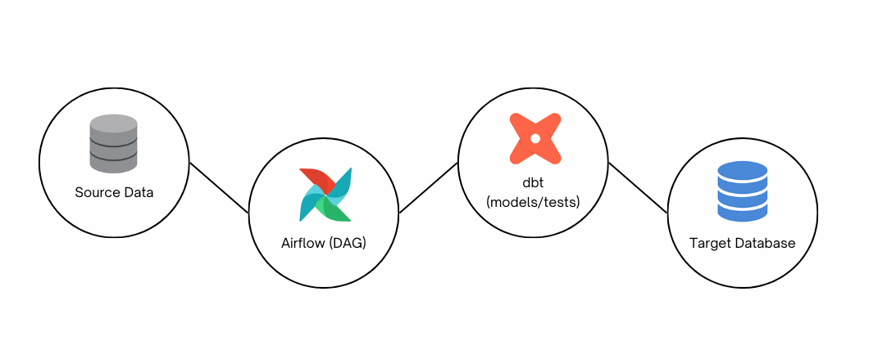

In the last few years, I’ve worked on various data analytics and engineering projects — from forecasting service part demands in manufacturing to building ML-powered monitoring systems in healthcare. But one thing I kept encountering, again and again, was the need for clean, reliable, and automated data pipelines. I knew I needed to get more hands-on with the modern data stack — not just SQL scripts or Python notebooks, but something scalable and production-grade. That’s what led me to this project — designing a modular ETL pipeline from scratch using Apache Airflow, dbt, and Docker. This blog captures my journey, architecture, tools, and lessons learned along the way.
Many entry-level data projects stop at CSVs, Jupyter notebooks, or cron jobs. But in the real world, these quickly become hard to scale:
I wanted to simulate a real-world data engineering setup, where:
This wasn’t a random tech stack, every tool was chosen to solve a specific pain point:
This project follows a modular and layered structure. At a high level, it’s split into: Airflow DAGs, dbt Models, Docker Compose.
The DAG (Directed Acyclic Graph) defines the logic of the ETL process. I used Python to configure tasks like ingesting sample data (or simulating extraction),
Triggering dbt commands (dbt run, dbt test) and sending success or failure logs.
Airflow gave me full visibility into how each job runs, how long it takes, and whether it failed.
This is where most of the magic happens. Instead of writing one giant SQL script, dbt encourages a layered, modular approach:
stg_): Clean and rename columns, remove duplicatesint_): Join tables, apply business logicdim_, fct_): Ready for analytics and dashboards
Each model can be tested with built-in dbt tests — e.g., checking for nulls, uniqueness, or referential integrity.
Setting up Airflow and dbt manually would’ve taken hours. Instead, I created a Dockerfile and docker-compose.yml that launch all components in isolated containers.
I defined services for:
airflow-webserverairflow-schedulerairflow-cli for interacting with dbtHere’s what a full run of the pipeline looks like:
docker-compose up launches Airflow and dbt.dbt run and dbt testMy advice to anyone starting with Airflow is to avoid jumping straight into complex DAGs. Start small—get comfortable with the Airflow UI, experiment with PythonOperator and BashOperator, and understand how scheduling and task dependencies work. Once you're confident, introduce tools like dbt into your DAGs. Treat Airflow as your pipeline’s control tower, and make sure every task has clear logging and error handling. It’ll save you hours of debugging later.